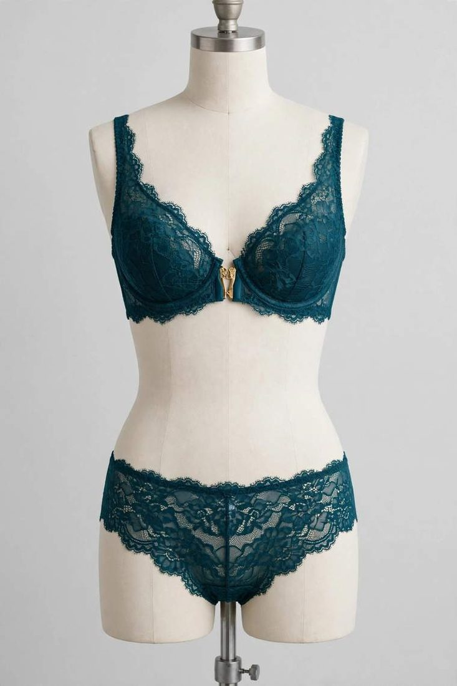

Lingerie is the most unforgiving product a small brand can order. A hoodie that fits a little loose still sells; a bra that fits a little wrong does not sell at all, and the customer who sends it back rarely tells you why. As a custom lingerie manufacturer in Sialkot, Pakistan, we make bras, matching sets, nightwear and bodysuits for boutiques and online labels. The brands that get it right treat fit and fabric as one decision, made before anyone talks about price.

Before you choose a single lace, decide exactly what you are selling: which bra styles, which brief cuts, sets sold together or separately? A first collection of three pieces sharing one lace and one colour story is a stronger launch than eight pieces in eight fabrics: every shared material is one less thing that can go wrong. Our lingerie range covers T-shirt, push-up, strapless and multiway, front-closure, sports and lace bras, matching sets, nightwear and bodysuits, so most brands start with two or three bra styles and the briefs that match them, then add pieces once the first set is proven.
Most buyers get this wrong: they fall in love with a lace in a photo and build the whole order around it. Lace is the look of the product, not the structure. A stretch lace moves with the body and forgives small fit differences; a rigid lace forgives nothing, so the pattern has to be exact. Power mesh is what actually holds a bra together, usually hidden inside. Satin looks expensive and shows every stitch, so the sewing has to be cleaner than on any other fabric we cut. Seamless knits forgive sizing differences but take dye differently from cut panels, so colour matching needs care. Pick the fabric for the job the piece has to do, then pick the lace you love from the fabrics that can.
This is where a lingerie order is decided. A bra is not one measurement, it is four things working together: band, cup, underwire and strap geometry. The band does most of the support, not the straps: if it rides up at the back, the bra has failed, whatever the cup looks like. The underwire has to sit flat at the centre, what fitters call the gore tacking. If it floats, the cup is the wrong shape for that body, and no strap adjustment will fix it. Straps usually slip for a different reason than people think: the band is too loose, so the strap carries weight it was never meant to carry.
Agree the size chart with your manufacturer in writing, band and cup separately, rather than assuming retail sizes. Retail sizing varies between brands and countries: a 34B from one label is not a 34B from another. Sister sizing matters too: a customer who cannot find her size tries the sister size, so the grade between sizes has to stay consistent or the whole range feels wrong. For a first order, ask for one fit sample in your most common size, usually a middle band and cup, and try it on real people of different builds. Check the band (does it stay level?), the wire (does it sit flat?), the straps (do they stay put?) and whether the lace still matches at the centre front once worn. Keep the approved size chart on file: it makes every reorder faster and stops the slow drift where each order fits a fraction differently from the last.
Buyers inspect the lace and ignore the elastic, but the elastic is what the customer feels after ten washes. Specify these details in your tech file or reference notes:
I still check every lingerie sample myself before it goes into the polybag, the same way every time. I hold the bra up by the straps, let it hang, then pull the band the way a customer would putting it on. If the band does not come back, the elastic is wrong and the sample stays. Then I run my thumb along the underwire channel, both sides, feeling for the bar tack at each end. I look at the lace at the centre front, left cup against right cup: that is where a mismatch shows first. And I check the hook-and-eye tape: a tape stitched even slightly crooked will never sit flat on the body. Two minutes per piece, and it has saved more orders than any machine we own. The habit came from a sample I approved too quickly years ago, and I have not skipped the check since.
A boutique once ordered fifty lace sets from us, sample approved, everything agreed. The sample lace was soft, with a gentle stretch. When the bulk lace arrived, the pattern was identical but the hand was stiffer, and nobody had compared the two side by side before cutting. We caught it on the first piece from the run. The mill replaced the lace, we re-cut, and the order went out right, a few days late. The lesson stayed with us: approve lace by hand feel, not just pattern, and always check the first production piece before the rest of the run is cut. A sample approves a design. The first production piece approves the materials.
MOQ, minimum order quantity, is the smallest production run a factory will make per style. Cutting and setup cost the same for 15 pieces or 1,500. Our trial MOQ for lingerie is 15–50 pieces per design, and you can mix sizes within it, so a new brand can launch its first set in one colourway without buying stock nobody will wear. Start with one colourway and one set combination, confirm fabric, fit and lace match, then add colours and pieces.
A custom lingerie set is only a private label product if it carries your brand and nothing else. We make to your design and sew in your own brand labels and size tags, with your packaging as instructed: polybags, stickers, hang tags and custom boxes on request. If you ask for it, we can also add a "Made in [your country]" tag; otherwise our standard "Made in Pakistan" tag is used. Send label artwork early, with the design: labels are produced alongside sampling, so they never hold up your bulk order.
Sampling turns your specification into a physical set you can hold, try on and wash. Send a tech file if you have one: measurements, fabric, construction details, artwork positions. If you do not, a clear photo, your artwork file and a reference piece you already own are enough to start. We quote exactly for that piece once we have seen the design, never blind, then develop the sample in 7–10 working days and share photos for approval. Then test it properly: wear it, wash it once, check elastic recovery, wire position, strap hold and whether the lace still matches across the pieces. Small corrections now are cheap. The same correction after bulk production is not.
Good factories check twice: in-line, while production is running, and as a final inspection before packing: measurements, stitching, lace matching, labelling and count. For small orders, one piece from the run can be sent for checking while the rest continues. You should still receive final quality-check photos before dispatch, so what arrives is what you approved. For larger orders, an independent pre-shipment inspection adds a documented check before the goods leave, see our inspection services.
Plan backwards from the date your sets are needed. Sampling takes 7–10 working days; bulk time depends on quantity and finishes, so a straightforward 50-piece run in one colourway moves faster than a large order across several colourways with embroidered lace and custom packaging. Add shipping to North America or Europe by air or sea, and give your manufacturer the real deadline: it lets the factory plan the run properly.
Before you commit to any lingerie supplier, ask:
A serious factory answers plainly and asks to see your design before quoting: an exact quote is only possible once the piece itself is understood.
You do not need a finished tech pack or a big budget to begin, just one set combination, a rough idea of the lace and fabric feel you want, and the sizes your customers actually buy. Send us your design, tech file or a clear photo on WhatsApp at +92-339-5099397 or by email at safettech@outlook.com, and we will reply with an exact quote and a sampling plan, or use our contact page to request a sample. Your brand's first lingerie set can start with as few as 15 pieces.

Lingerie is the one product where a millimetre matters more than a mood board. Send me your design and tell me who it is for, and I will check the fit the way I would check it for my own customer.
Ahmed Zahid
Founder & Director, Safe-T TECH International · Sialkot, Pakistan
Send your design today — samples in 7–10 days, trial orders from just 15 pieces.